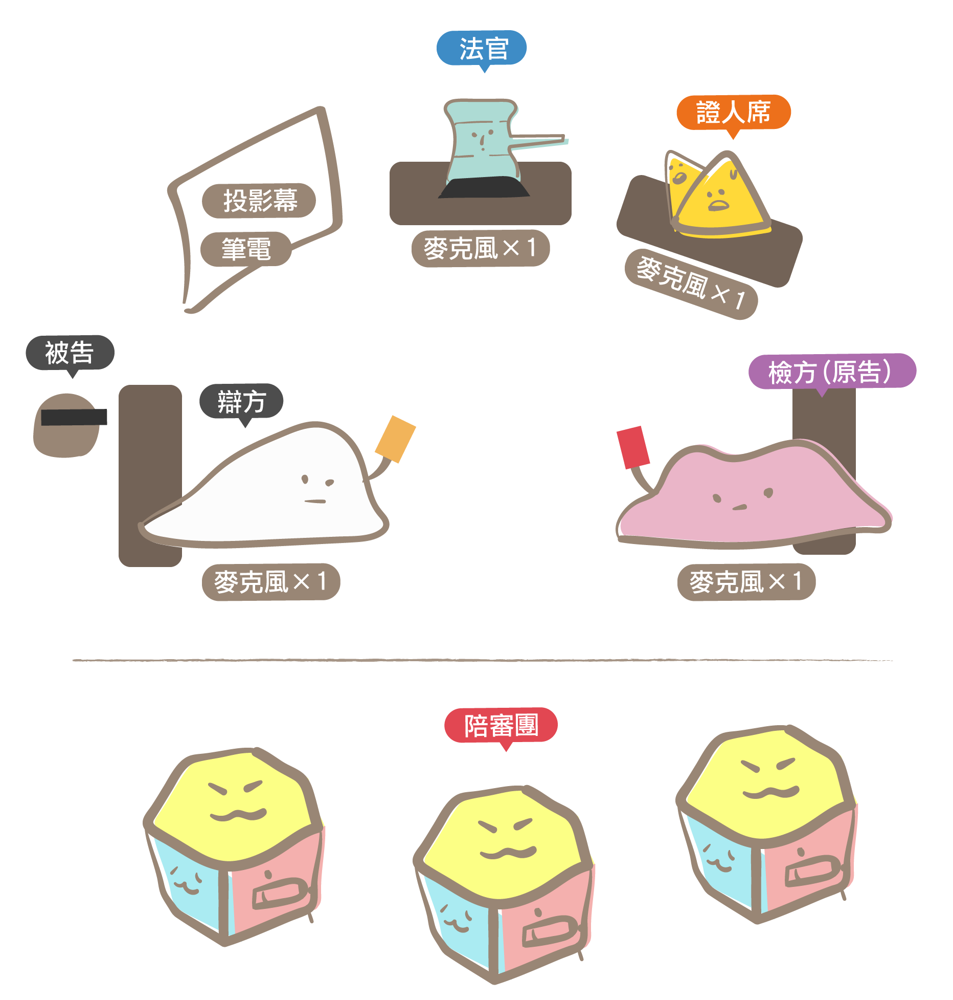

由教師獨立完成
教師參考教具包中的資料進行備課並準備教具。
歡迎教師在備課過程中與我們討論交流。
step 1 時間需求
所需時間：兩堂課
- 第一堂課：由同學們扮演法官、檢察官、律師、被告、證人等角色，來進行模擬陪審法庭。
- 第二堂課：全體同學擔任陪審員，9~12人一組，各組推選出1位主席，帶領陪審員表示意見與進行投票，相互說服，最後得出一致決的結論。再由講師（由律師或教師）進一步來介紹與說明模擬陪審法庭中的相關概念。
step 2 選定劇本
目前民間司改會的劇本有五種案件類型，在首頁的「劇本簡介 」中可以初步了解劇情，以下是五個案件劇本的教材包：
- 指桑罵槐案——妨害名譽
- 寶石竊盜案——竊盜
- 鬥毆案——傷害
- KTV販毒疑雲案——販毒
- 性侵疑雲案——乘機性交
step 3 準備法袍及場地
準備法袍
法袍可以幫助同學更進入法庭審理的情境，因此我們建議教師準備，除了可以到即有的通路購買外，較為經濟的做法是至布行買布，請裁縫師傅製作。法袍有三種顏色：白—律師、紫—檢察官、藍—法官，三者版式是相同的，教師可以買一件律師袍後，至布行選材質接近的紫色與藍色的布科，請裁縫師傅製作法官及檢查官的法袍。
場地設備
- 投影設備（含電腦）：法庭劇中會需要播放證物的PDF檔。
- 麥克風4支：為了讓法庭劇能順暢，最佳配置是「法官」、「檢察官」、「律師」及「證人席」，每個位置各有一支。
step4 準備教學PPT
活動分成兩階段，第一堂課的法庭劇，在演員組同學進行法庭劇之前教師可先說明以下知識點：
- 法庭的座位配置及法庭上各角色的功能
step 5 活動前一週
每份教材包中有6個檔案：
- 角色分配表：活動前一週，選任演員時使用。
- 劇本：活動前一週給演員組同學，每位演員一人一份，請同學保密勿外流。
- 場地配置圖：活動當日依配置圖怖置場地，印出一份。
- 立牌：活動當日依配置圖放置角色立牌，印出一份。
- 陪審員手冊：活動當日發給每位陪審員同學，一人一份。
- 證物：不需印出，請投影播放，並依劇本的進展播放證物。
教師需在預定要進行模擬法庭活動前一週的課堂上，將「劇本」及「角色分配表」印出，先選出演員，並將劇本交給演出的同學。擔任陪審團的同學也先行分組。
- 演員組：7-8人，演員組同學不需背稿，可以看著劇本演出，但因為台詞很多，故需請演員先看過劇本，並請同學務必保密，不要將劇本內容透露給其他同學。
- 陪審員組：每組建議9~12人，並請各組選出主席。
step 6 活動當日
發放資料
教師印出教具包中的「場地配置圖」、「立牌」及「陪審員手冊」，陪審員手冊每位同學一人一份。
場地佈置
教師依配置圖布置教室，請留意各角色的位置要面對陪審員。在法官、檢方、辯方及證人席上都各放一支麥克風。
投影檔案
教師將「證物」的PDF檔及講師的投影資料存入電腦，並準備投影設備，確認可以順暢播放。
法庭劇開始前
法庭劇開始前，教師將法袍交給演員，並提醒每位演員在演出時需面向陪審團說話，而不是法官，陪審員是進行判決的人。
- 法官：告知扮演法官的同學，在法庭劇快結束前，法官會依劇本對陪審員說明「評議前指示」，此時要在「一致決」或「2/3多數決」擇一，為讓同學能充分彼此說服，我們建議教師使用「一致決」。
- 證人：提醒扮演證人的同學，在法官傳喚證人時，請帶著立牌前位證人席就坐。
- 律師、檢察官:提醒扮演律師及檢察官的同學，發言時需站立，「異議」時不需站立，但需舉手。
陪審員就位
教師請陪審員依分組就坐。
演員組就位
請各演員就定位，請教師為活動開場，介紹法庭各角色的功能及配置，並請陪審員仔細耹聽，將自己認為重要的事項紀錄在陪審員手冊上。
播放證物投影片
法庭劇進行中，請教師依著法庭劇的進展，提示相關的證物。
法庭劇結束
法庭劇結束，教師請各組陪審團開始進行評議，介紹「全數決」的概念，提醒陪審員依法官指示進行評議。
並請演員組同學也組成一團陪審團進行評議。
陪審員評議
觀察各組陪審團的討論情況，視狀況協助同學聚焦。
評議結束
請各組分享評議結果，並介紹人民參與審判制度及相關的法律概念。
活動結束
請教師鼓勵同學填寫線上回饋表單（陪審員手冊上有QRcode），並收回陪審員手冊。
